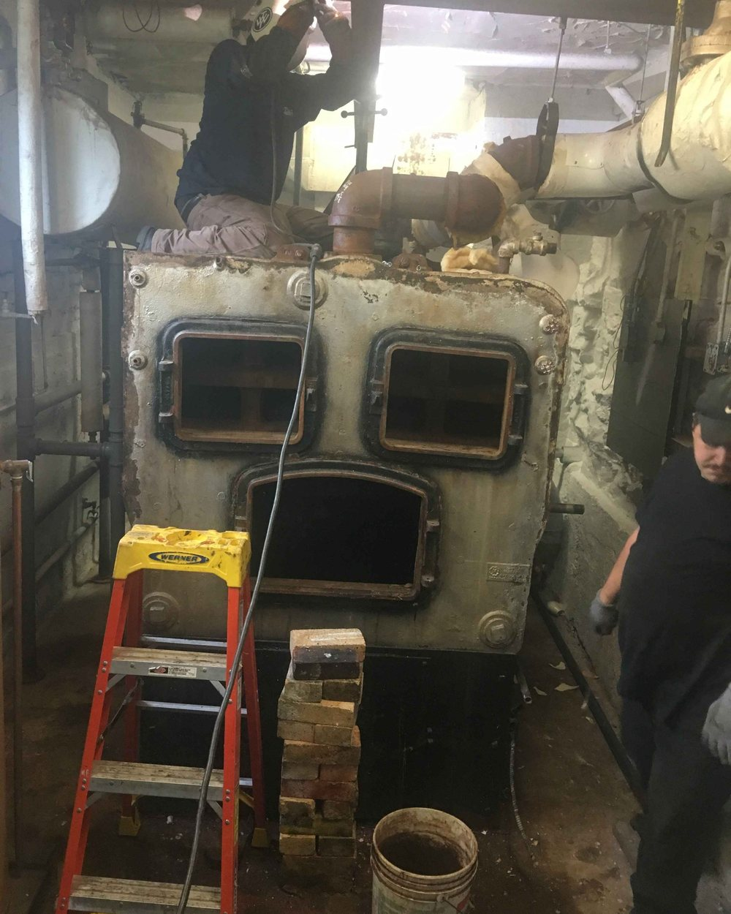

About KBS
Commercial demolition done with accountability.
KBS is built for the contractors, facility teams, and property owners who want a reliable demolition partner — one that communicates well, works safely, respects the jobsite, and follows through.

Who we are
Direct. Capable. Ready for the work.
We understand that demolition is rarely a stand-alone task. It is often the first move in a renovation, shutdown, redevelopment, or construction schedule. That means the details matter: access, coordination, material handling, site conditions, and leaving the next team ready to begin.
Use this page to add KBS’s story, service area, licensing, and company background. The page is now paired with your real jobsite photography, so the overall site feels much more credible out of the box.
Talk With Our Team →01Commercial focus
02Clear communication
03Controlled execution
04Clean turnover
Work with KBS